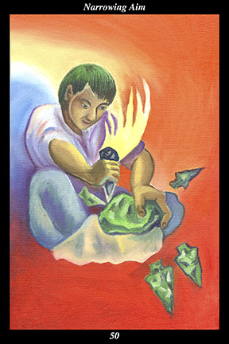

 | IMAGE
A male warrior makes arrowheads by chipping them from a larger piece of obsidian. Finished arrowheads lie on the ground around him and another, unfinished, one falls away from the larger stone he has just struck. He strikes the larger stone with confidence and certainty, each action’s precision the result of long and diligent practice.
|
INTERPRETATION
This hexagram depicts those who narrow their focus. The male warrior symbolizes the training and discipline that increases an individual’s versatility and fortitude. That he makes arrowheads by chipping them from a larger piece of stone means that you succeed by narrowing your larger vision down to definable and achievable goals. The finished arrowheads symbolize the experience, learning, and skill you have already acquired. The unfinished arrowhead falling away from the block of obsidian symbolizes your present endeavor, which comes out well because you can rely on the strengths you have developed through past efforts. That great practice has made him confident and effective means that your actions achieve their desired effects because you never stop perfecting your craft. Taken together, these symbols mean that you bring
benefit to others by narrowing the totality of your interests down to the specific purpose at hand.
ACTION
The masculine half of the spirit warrior serves the whole by mastering the part. Grand schemes and long-range plans come to pass only through the slow accumulation of well-aimed actions and timely responses: this is not the time for great visions but, rather, for small and perfectly executed deeds. Even the smallest of our successes and the greatest of our failures contribute to our mastering that aspect of life we are called to specialize in: this is not the time for regrets or dreams but, rather, for practical and immediate results. Experience is built up over a long period of time and not just mastered overnight: this is not the time for impatience or arrogance but, rather, for devoting ourselves to a lifetime apprenticeship of practice and learning. Creativity without results is sterile, understanding without acts is self-indulgent: this is not the time for beginning new wide-ranging projects but, rather, for completing narrowly-focused goals already initiated. Through long repetition and genuine sincerity, practice is transformed into mastery and mastery into service: this is not the time for self-satisfaction or self-importance but, rather, for placing our endeavor in the service of that which is greater than ourselves.
INTENT
When your true aim is to manifest the spirit you have always believed yourself to be, your every action, no matter how seemingly insignificant, hits the target. There are innumerable excuses for not making spiritual progress but they all boil down to a failure to act as we know we should: only by ignoring distractions and eliminating compulsiveness can we stop being dragged around by our attention and begin to direct it toward the purpose of real moment. Actors may take on different roles and act in many different ways but beneath all those various external appearances they sustain the true intent to prove themselves the quality of actor they have always believed themselves to be: it is in this sense that we must not lose ourselves in the roles and actions of everyday life but, rather, comport ourselves with the dignity and wisdom and generosity of a noble and powerful spirit. In this way we narrow the uncountable aims of the body down to the spirit warrior’s single aim of contributing materially to the well-being of the whole.
SUMMARY
You have spread yourself too thin trying to accomplish too many things at once. It is essential that you decide upon the order in which things need to be done and then complete each in turn. Moving back and forth between different activities is not allowing you to develop your skills or vision or relationships as you should. Finish what you have started before starting over.
THE LINE CHANGES
1° What you take for granted is changing, leading to momentous surprises. While the self does not age, the body does—and the emotions are always trying to catch up with changes the body has already undergone. Use each stage of life to remind yourself that you are not your body.
2° Your strength of personality can overshadow those around you—know when to step aside and let others shine. You learn more about yourself by not doing what comes easily than by falling into predictable routines. Treat your loved ones as great mysteries and they will astonish you.
3° A new opportunity presents itself, one that promises rapid advancement and certain profit. What you do now reveals much about your character to you—do you fulfill your duty or do you pursue a mirage? Choose loyalty over cleverness and persistence over sudden gain.
4° Follow your curiosity and it evolves into a hobby which evolves, in turn, into a passion and thence into expertise. Your love of learning new things leads you to participate on a deeper level with the people and nature around you. Be interested in anything but yourself.
5° The window of opportunity opens—people both above and below respond favorably to you and offer their support. Incorporate their interests and goals into your own, letting them lead for the time being. Incorporate their thinking into your own, letting them prepare you to take the lead later.
6° Your life purpose hangs, like the pre-dawn sun, just below the horizon of your vision—all it needs to rise is a welcoming invitation. Turn your attention away from trivialities and toward a dream you had forgotten until now. Abandon the outer distractions in favor of a single-minded remembering.